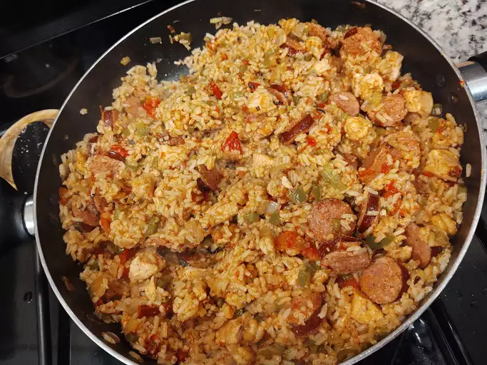

Jambalaya

spicy Jambalaya
Jambalaya with a spicy twist.
Made with chicken, andouille sausage, rice, and
Cajun seasonings. Easy to make in just one pot.
Ingredients
- oil: Chicken and andouille sausage
are sautéed in peanut oil.
- Sausage: Opt for andouille
sausage for the most authentic jambalaya.
- Chicken: Cut one pound of boneless,
skinless chicken breasts into 1-inch pieces.
- Spices and seasonings: This chicken and sausage
jambalaya is flavored with Cajun seasoning,
fresh garlic, red pepper flakes, salt, pepper,
hot sauce, Worcestershire sauce, and file powder
- Vegetables: You'll need an onion, green bell peppers,
and celery.
- Rice: Opt for plain white rice for this
jambalaya recipe.
- Broth: Use store-bought or homemade chicken
broth to cook the rice.
Steps
- Cook the meat: Season the sausage and chicken
pieces with Cajun seasoning. Sauté the sausage
until browned, then remove with a slotted spoon
and set aside. Sauté chicken until lightly browned
on all sides. Remove with a slotted spoon and
set aside.
- Cook the vegetables: In the same pot,
sauté the onion, celery, bell pepper,
and garlic until tender. Stir in the crushed
tomatoes and seasonings. Add the meat and cook
for 10 minutes.
- Add the rice: Stir in the rice and chicken broth.
Bring to a boil, reduce the heat, and cook until
all the liquid is absorbed.